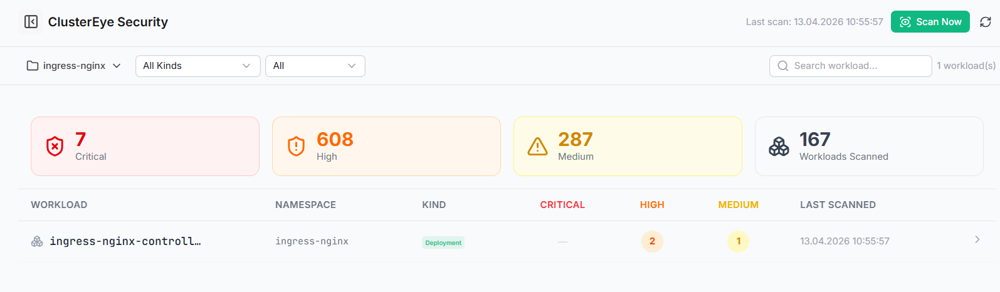
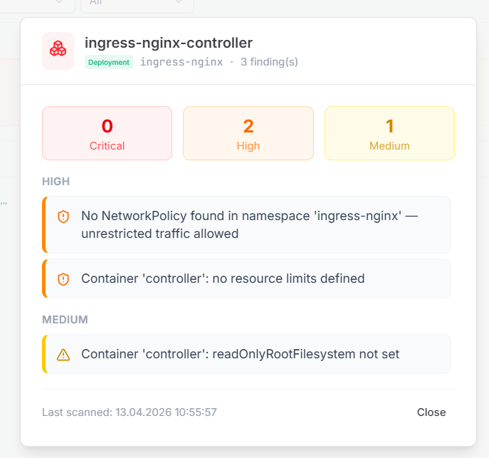

DOCUMENTATION HUB V7.0
DOKÜMANTASYON MERKEZİ V7.0
ClusterEye Security Posture
ClusterEye Güvenlik Duruşu
Elevate your Cloud Security Posture Management (CSPM). ClusterEye automatically analyzes cluster configurations, detecting dangerous manifest misconfigurations, missing boundaries, and privilege-escalation vectors directly inside your Kubernetes specs.
Bulut Güvenlik Duruş Yönetiminizi (CSPM) güçlendirin. ClusterEye, küme konfigürasyonlarını otomatik olarak analiz eder; tehlikeli manifest yanlış yapılandırmalarını, eksik sınırları ve ayrıcalık yükseltme (privilege-escalation) saldırı yüzeylerini doğrudan Kubernetes mimarinizin içinde tespit eder.


Core Analysis Ruleset
Temel Analiz Kural Seti
!
Missing NetworkPolicies: Identifies namespaces allowing unrestricted lateral movement traffic, highlighting critical isolation gaps.
Eksik NetworkPolicy'ler (Ağ Politikaları): Kısıtlanmamış yanal trafik hareketine izin veren ad alanlarını (namespaces) belirleyerek kritik izolasyon boşluklarını vurgular.
!
Unbounded Resources: Flags containers missing CPU and Memory constraints, preventing the "noisy-neighbor" problem and cluster node starvation.
Sınırlandırılmamış Kaynaklar: CPU ve Bellek (Memory) kısıtlamaları eksik olan konteynerleri işaretler; "noisy-neighbor" problemini ve node kaynaklarının tükenmesini önler.
!
Privilege Escapements: Scans for missing
readOnlyRootFilesystem attributes to stop attackers from rewriting system bins if a container is compromised.Ayrıcalık Aşımları: Eğer bir konteyner ele geçirilirse, saldırganların sistem dosyalarını yeniden yazmasını engellemek için gerekli olan
readOnlyRootFilesystem özelliğinin eksikliğini tarar.